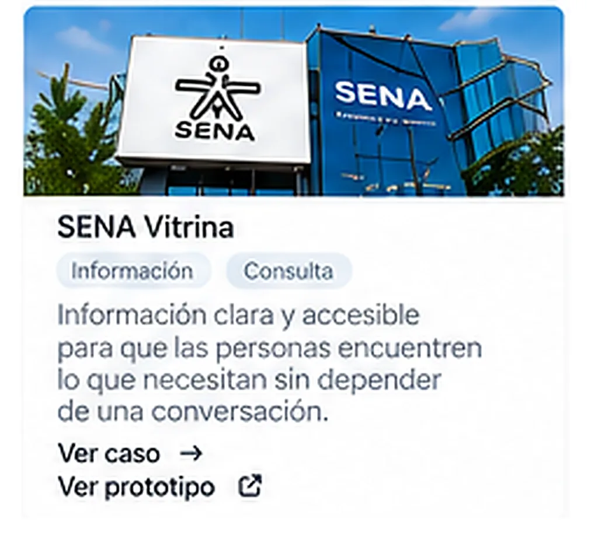

Diseñamos un recorrido digital para conectar la producción de los Centros SENA con las personas que pueden adquirirla.
La plataforma debía funcionar desde cualquier Centro, QR o enlace, sin importar desde dónde comenzara el usuario.

Conectar una oferta dispersa con la persona correcta.
Los Centros de Formación SENA producen productos y servicios que pueden ser adquiridos por personas y organizaciones, pero la oferta necesitaba una forma más sencilla de llegar al cliente correcto.
La plataforma debía funcionar desde cualquier centro, QR o enlace, sin importar desde dónde comenzara el usuario.
Encontrar lo relevante no era tan sencillo como mostrar un catálogo.
El usuario puede no saber qué Centro produce lo que necesita, dónde está ese Centro, qué productos tiene disponibles ni qué opción es relevante.
Por eso, mostrar un catálogo completo no era suficiente. Había que guiarlo.
Convertimos un QR o enlace en un recorrido personalizado.
Creamos una vitrina digital que convierte un punto de entrada simple en un recorrido que organiza la oferta y ayuda al usuario a encontrar lo que realmente necesita.
El sistema utiliza información como ubicación e intereses para organizar la oferta.
La experiencia guía al usuario hasta el Centro que puede atenderlo.
Aquí el recorrido es la pieza principal del caso: desde el primer contacto hasta la solicitud enviada al Centro de Formación correspondiente.
El recorrido no termina cuando el usuario encuentra un producto.
Termina cuando la solicitud llega al Centro de Formación correspondiente. El Centro recibe el pedido, se comunica directamente con el cliente y coordina la entrega.
Por eso el sistema conecta: el punto físico → la experiencia digital → el pedido → el Centro → el cliente.
“Un QR puede ser el comienzo de una venta, no solo el acceso a una página.”
Una vitrina digital que convierte una necesidad en una oportunidad para el Centro que puede atenderla.
El valor del recorrido está en conectar la oferta de los Centros con personas que realmente pueden estar buscando lo que producen.